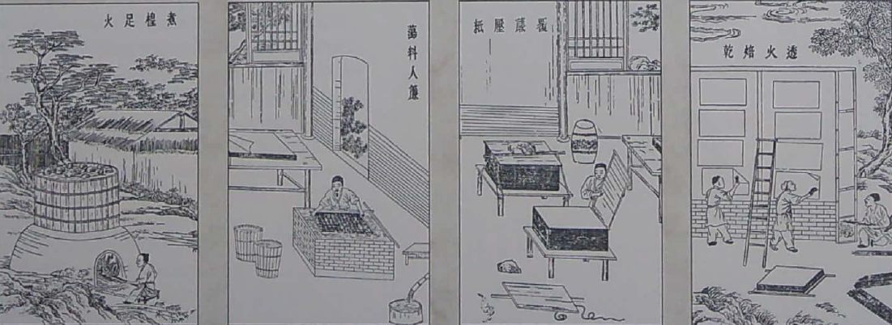

Curiosidades
Desde que a ser humano se comunica acreditamos que ele procura um meio de deixar seus registros, lembranças, histórias e conhecimentos. Visualizamos os comportamentos de registros desde as pinturas rupestres nas cavernas, até os blocos de argila e ferro encontrados no período do império romano. Mas desde 3.200 anos antes de Cristo que já te tem o feito do papel como estratégia, e a ancestralidade do nosso feito data dos papiros no Egito Antigo.
O papiro é uma planta que cresce nas margens dos rios africanos, comumente encontrado nas margens do Nilo. As características dessa planta permitem que se disponha a medula de suas folhas em um conjunto e, ao martelar sua disposição ela solta sua seiva que serve como cola, assim tendo um papiro uniforme que seria polido com pedras de ágata ou marfim que permite a escrita e o desenho. Existia até mesmo um apagador chamado de spongia deletis.
É como em muitos casos como este que os precursores dos nossos papéis foram encontrados e elaborados antes de serem propriamente inventados e confeccionados na China, onde as técnicas ensinadas em nossa oficina tiveram sua origem.
